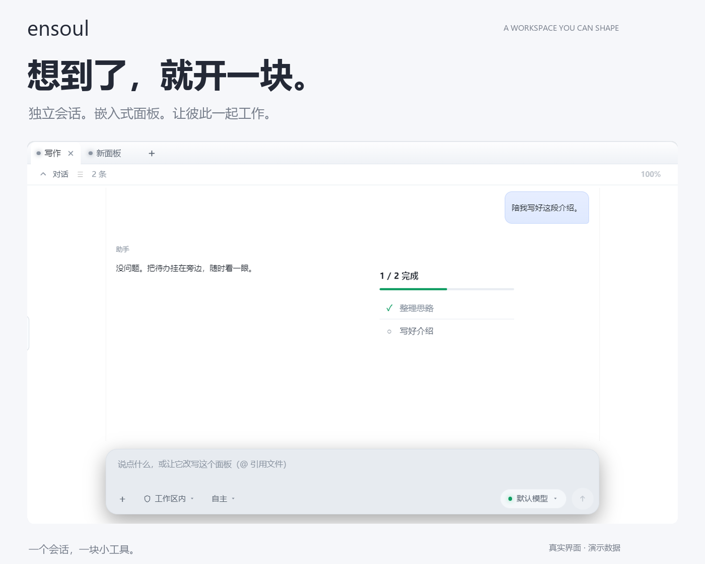
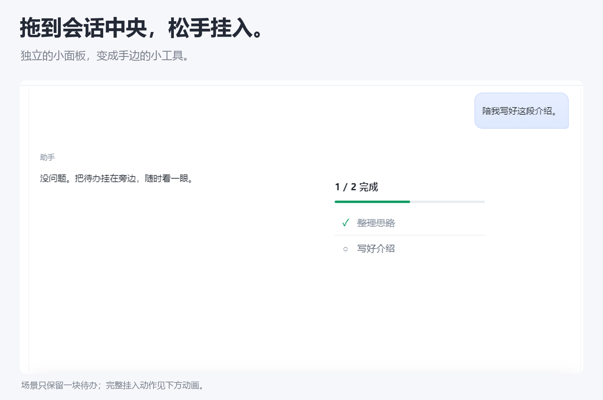
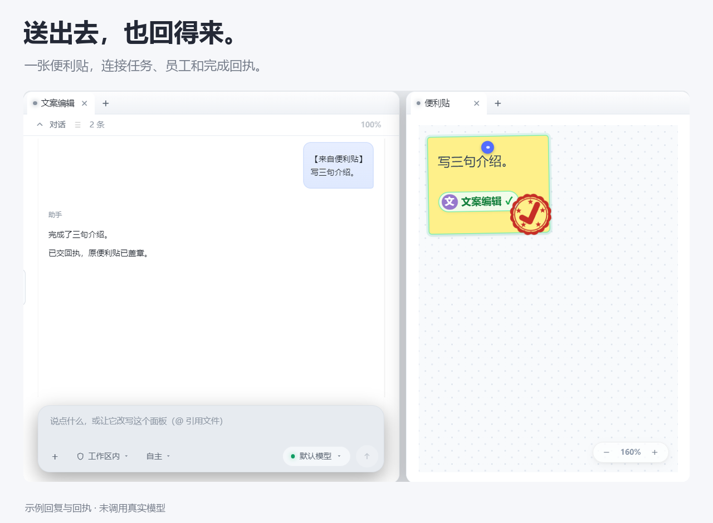

<!doctype html>
<html lang="zh-CN">
<meta charset="utf-8">
<meta name="viewport" content="width=device-width,initial-scale=1">
<title>ensoul · 想到了，就开一块</title>
<meta name="description" content="自由打开面板，把小工具挂进会话，让便利贴与 AI 员工一起工作。">
<style>
  :root{color-scheme:light;font-family:"Microsoft YaHei UI",system-ui,sans-serif;background:#f6f7fa;color:#242936}
  *{box-sizing:border-box}body{margin:0}main{max-width:1040px;margin:auto;padding:38px 28px 64px}
  nav{display:flex;justify-content:space-between;gap:16px;align-items:center;margin-bottom:28px}nav b{font-size:27px}
  a{color:#5a70e8;text-decoration:none}p{color:#777e8b;line-height:1.8}h2{margin:44px 0 16px;font-size:28px}
  img,video{width:100%;height:auto;display:block;border-radius:12px}figure{margin:0}figcaption{font-size:13px;line-height:1.7;color:#777e8b;margin-top:12px}
  .links{display:flex;flex-wrap:wrap;gap:18px;margin:20px 0}footer{margin-top:44px;padding-top:24px;border-top:1px solid #dfe1e8;color:#777e8b;font-size:14px}
  @media(max-width:600px){main{padding:24px 12px}h2{font-size:23px}}
</style>
<main>
  <nav><b>ensoul</b><a href="http://192.168.5.22:3000/katu/ensoul">打开仓库 →</a></nav>
  <figure></figure>
  <h2>随手开，挂进去，一起做。</h2>
  <p>点一下＋，开一块新面板。拖动待办，松手挂入会话。再把任务便利贴送给员工，完成回执回到原卡。</p>
  <figure>
    <video controls autoplay muted loop playsinline poster="assets/showcase/cover.png"><source src="assets/showcase/demo.mp4" type="video/mp4"></video>
    <figcaption>14 秒 / 30 帧。真实 Electron 界面、演示数据与脚本编排；移动轨迹为合成动画，未调用真实模型。</figcaption>
  </figure>
  <div class="links"><a href="assets/showcase/demo.gif">循环 GIF</a><a href="assets/showcase/demo.mp4">MP4 视频</a><a href="../README.md">README</a></div>
  <h2>工具就在手边。</h2>
  
  <h2>任务从哪来，回执就回哪去。</h2>
  
  <footer>持续开发版本。桌面组件暂停开发。品牌暂用 ensoul 文字标识。<a href="assets/showcase/share.png">下载分享封面</a></footer>
</main>
</html>
